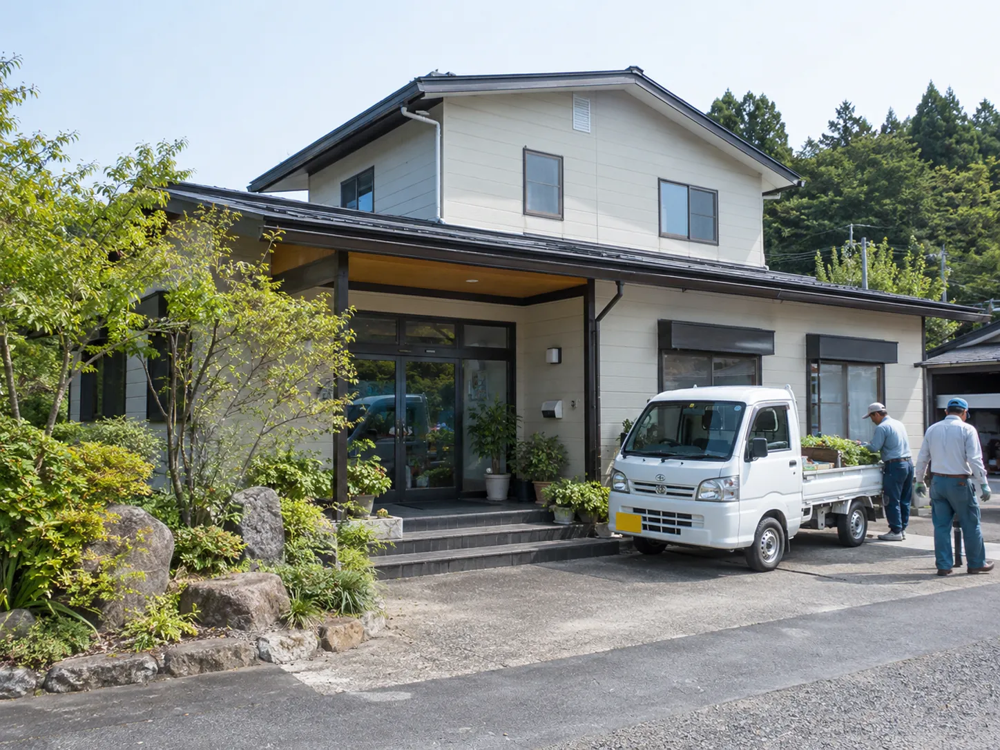

Profile
会社概要
- 会社名
- 株式会社北翠園（ほくすいえん）
- 創業
- 1989年
- 代表者
- 代表取締役
- 従業員数
- 約20名
- 所在地
- 北海道札幌市
- 事業内容
- 造園工事／庭園管理／庭木の剪定・伐採・抜根／庭づくり・リフォーム／外構・エクステリア工事／年間庭園管理／法人・施設向け植栽管理／冬囲い
- 対応エリア
- 札幌市内を中心に、石狩市・江別市・北広島市など札幌近郊
- 営業時間
- 8:00〜18:00（平日・土）／日曜・祝日 休み

Access
アクセス
お車でお越しの際は、駐車スペースの有無を事前にご連絡ください。現地の確認は、札幌近郊まで伺います。
所在地は北海道札幌市です。詳しい住所と、最寄りのバス停・駐車場のご案内は、お問い合わせの際にお伝えします。
Contact
庭のお悩みを相談する
お電話・お問い合わせフォーム・LINEからご相談いただけます。庭の写真を送っていただけると、より具体的にお話しできます。検討中の段階でも、遠慮なくご相談ください。
送信いただき、ありがとうございます。
内容を確認のうえ、2営業日以内にご返信いたします。お急ぎの場合は、お電話またはLINEでもご相談いただけます。
FAQ
よくある質問
庭木1本だけでもお願いできますか？
はい。庭木1本の剪定や、枝が1本はみ出しているといったご相談から承っています。「これくらいで頼んでいいのかな」という内容でも遠慮なくご相談ください。
見積りは無料ですか？
はい。現地を確認したうえでのお見積りは無料です。写真をお送りいただければ、おおよその費用感を先にお伝えすることもできます。ご相談後にお断りいただいても問題ありません。
どの地域まで対応していますか？
札幌市内を中心に、石狩市・江別市・北広島市など札幌近郊に対応しています。エリア外でも内容によってはお受けできる場合がありますので、まずは場所と内容をお知らせください。
剪定におすすめの時期はありますか？
木の種類によって適した時期が変わります。落葉樹は葉を落とした後の時期、常緑樹は新芽が落ち着いた時期が目安です。年間管理では、木ごとに時期を分けて計画します。迷う場合はご相談ください。
大きくなりすぎた木も対応できますか？
はい。高木の剪定や、建物・電線に近い木の伐採にも対応しています。周囲の状況に応じて分割して作業し、切り株の抜根（掘り取り）まで承ります。
法人の年間管理も依頼できますか？
はい。マンション、店舗、企業、病院、福祉施設などの植栽・樹木の年間管理を行っています。管理計画とお見積りを作成のうえ、定期巡回で対応します。
冬囲いだけでもお願いできますか？
はい。冬囲いのみのご依頼も承っています。雪が積もる前の時期は混み合いますので、早めにご連絡いただけると調整しやすくなります。春の囲い外しもあわせて承れます。
作業前に料金を教えてもらえますか？
はい。現地確認のうえ、作業内容とお見積りをご提示してからのご契約です。ご確認いただかないまま作業を進めることはありません。お支払い方法も事前にご相談ください。
庭のことで迷ったら、まず北翠園へ。
剪定から庭づくり、年間管理まで。札幌に根ざした造園会社として、庭のことをまとめてお引き受けします。ご相談とお見積りは無料です。
受付時間：平日・土 8:00〜18:00／日・祝休み